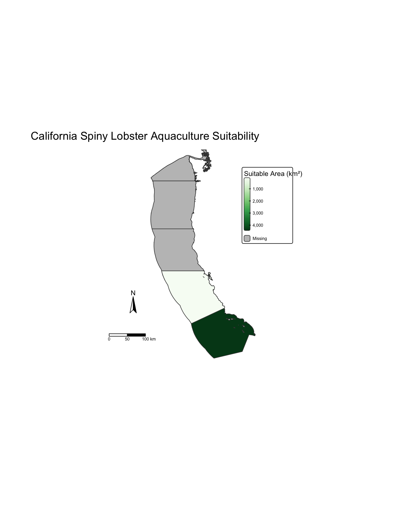

| EEZ Region | Suitable Area (km²) |
|---|---|
| Central California | 4,373.5565 |
| Northern California | 323.9124 |
| Oregon | 1,395.7328 |
| Southern California | 3,329.9002 |
| Washington | 3,091.5158 |
Sustainable Protein Production Challenges
With the global population approaching 10 bilion by 2050, protein demand has continuously risen. Terrestial livestock has increased to meet this demand - degrading the environment in the process. Marine aquaculture, however, offers a attractive solution to this problem. It is associated with lower carbon emissions, reduced freshwater use, and minimal land use compared to terrestrial livestock (Gephart et al. 2021).
Implementing this alternative requires finding locations with specific temperature, depth, and other environmental factors needed for particular marine species. Finding these optimal zones with spatial analysis would encourage sustainable aquaculture within Exclusive Economic Zone (EEZ) like the U.S’s West coast.
Research Question
Where are the most suitable locations along the U.S. West Coast for cultivating oysters and California spiny lobsters?
This analysis uses sea surface temperature data and ocean depth to produce a map containing optimal environmental conditions for these two commercially valuable species.
Data & Methods
Data Sources
This analysis uses the following datasets:
- Sea Surface Temperature (SST): Average annual temperature data (2008-2012) from NOAA Coral Reef Watch, providing a five-year baseline to capture climate variability
- Ocean Depth: Bathymetry data from the GEBCO 2022 Grid
- EEZ Boundaries: West Coast Exclusive Economic Zone boundaries from the Flanders Marine Institute
Species Requirements
Based on the species-specific biological research from SeaLifeBase (Palomares and Pauly 2025), I found the following optimal conditions for my species of interest.
Oysters: - Depth: 0 to -70 meters - Temperature: 11°C to 30°C
California Spiny Lobster: - Depth: 0 to -150 meters
- Temperature: 14.8°C to 22.3°C
Analytical Approach
The analysis workflow involved:
- Data preparation: Transforming coordinate reference systems to match spatial extents and resolutions across all datasets
- Temperature processing: Calculating mean SST (2008-2012) and converting from Kelvin to Celsius
- Finding suitable areas: Reclassifying temperature and depth rasters to identify suitable areas (binary: suitable = 1, unsuitable = 0)
- Area calculation: Calculating suitable area (km²) within each EEZ region using zonal statistics
Results
Oyster Aquaculture Suitability
The analysis finds the most suitable EEZs for oyster aquaculture across the U.S. West Coast:
Central California is found to be the most suitable region for oyster aquaculture since it contains the largest area of optimal conditions.

California Spiny Lobster Suitability
The analysis finds the most suitable EEZs for California spiny lobster aquaculture across the U.S. West Coast:

Southern California is found to be the most suitable region for California spiny lobster aquaculture since it contains the largest area of optimal conditions - warmer waters and appropriate depth profiles.
Discussion & Implications
Key Findings
This spatial analysis maps potential aquaculture EEZs for Oyster and California spiny lobster.
- Central California is optimal for oyster cultivation, with moderate temperatures and shallow coastal waters
- Southern California is best suited for California spiny lobster, with warmer waters and appropriate depths
Limitations
The followint limitation should be considered:
- Simplified environmental criteria: This analysis only considers temperature and depth. Additional factors should be considered in order to find more accurate optimal zones.
Conclusion
Given the increasing demand for protein and depleted wild fisheries, marine aquaculture offers a sustainable pathway (FAO 2020). Spatial tools like this analysis can help guide development in appropriate exclusive economic zones. (Gentry et al. 2017).
References
FAO. 2020. “The State of World Fisheries and Aquaculture 2020: Sustainability in Action.” Rome: Food; Agriculture Organization of the United Nations. https://www.fao.org/state-of-fisheries-aquaculture.
Gentry, Rebecca R, Halley E Froehlich, Dietmar Grimm, Peter Kareiva, Michael Parke, Michael Rust, Steven D Gaines, and Benjamin S Halpern. 2017. “Mapping the Global Potential for Marine Aquaculture.” Nature Ecology & Evolution 1 (9): 1317–24.
Gephart, Jessica A, Patrik JG Henriksson, Robert WR Parker, Alon Shepon, Kelvin D Gorospe, Kathryn Bergman, Gidon Eshel, et al. 2021. “Environmental Performance of Blue Foods.” Nature 597 (7876): 360–65.
Palomares, M. L. D., and D. Pauly. 2025. “SeaLifeBase.” World Wide Web electronic publication. www.sealifebase.org.
Data Sources
West Coast Exclusive Economic Zones
Flanders Marine Institute (2023). Maritime Boundaries Geodatabase: United States West Coast Exclusive Economic Zones, version 12. Available online at https://www.marineregions.org/. https://doi.org/10.14284/632
Depth
GEBCO Compilation Group (2022) GEBCO_2022 Grid (doi:10.5285/e0f0bb80-ab44-2739-e053-6c86abc0289c).
Sea Surface Temperature
NOAA Coral Reef Watch. 2008-2012. NOAA Coral Reef Watch Average Annual Sea Surface Temperature Product. College Park, Maryland, USA: NOAA Coral Reef Watch. Data set accessed November 30, 2025 at https://coralreefwatch.noaa.gov.
Species Suitable Depth and Temperature
Palomares, M.L.D. and D. Pauly. Editors. 2025. SeaLifeBase. World Wide Web electronic publication. www.sealifebase.org, version (04/2025).